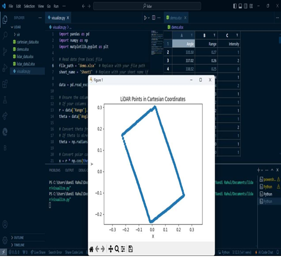

Drone-Based Aerial Mapping
Advanced LiDAR Integration for High-Precision 2D Terrain Mapping
Project Overview
Objective
Leverage drones and LiDAR sensors to achieve highly accurate and efficient aerial mapping, surpassing traditional methods in precision and cost-effectiveness.
Innovation
Integration of YD Lidar X2 sensor with custom-built drone platform for real-time 2D point cloud generation and terrain analysis.
Impact
Enhanced accessibility for mapping difficult terrains, supporting applications in forestry, agriculture, urban planning, and disaster management.
About the Project
This project revolutionizes aerial mapping by integrating unmanned aerial vehicles (UAVs) with advanced LiDAR (Light Detection and Ranging) technology. Traditional aerial mapping methods using manned aircraft or satellite imagery are often costly and time-consuming. Our drone-based solution offers a flexible, efficient, and highly accurate alternative.
The YD Lidar X2 sensor mounted on our custom drone platform uses laser pulses to measure distances to the Earth's surface, producing high-resolution 2D point clouds that represent terrain and objects with exceptional detail. This technology proves invaluable even in challenging environments such as dense forests or rugged terrain where conventional photogrammetry struggles.
The system successfully demonstrates capabilities across multiple domains including environmental monitoring, construction site surveys, precision agriculture, and archaeological site documentation - all while maintaining safety by minimizing risks to human operators.
Key Features
High-Resolution LiDAR Scanning
360° scanning with 0.36° resolution at 5000Hz frequency, capturing detailed spatial data up to 8 meters range.
Real-Time Data Transmission
2.4GHz wireless communication with 500-600 meter range for immediate data access and analysis.
Autonomous Flight Control
KK2.1.5 flight controller with MPU-6050 gyroscope and accelerometer for stable, precise navigation.
Advanced Data Processing
Python-based algorithms for point cloud generation, 2D reconstruction, and cartesian coordinate mapping.
Optimized Power Management
3S LiPo battery system (11.1V, 2200mAh) with 20C discharge rate for extended flight operations.
Onboard Data Storage
Memory card integration for secure data storage and deferred analysis capabilities.
Technical Architecture
Data Flow Architecture

Data Flow: User-initiated drone control triggers the data collection process where LiDAR generates 2D cloud points. The system processes this raw data and stores it on memory cards while generating real-time mapping output.
System Architecture

Block Diagram: Complete system architecture showing the integration of transmitter/receiver (2.4GHz), YD Lidar X2, Arduino Uno, KK Controller Board, ESCs, and BLDC motors powered by LiPo battery system.
Circuit Architecture

Circuit Design: Detailed wiring schematic showing receiver connections to Arduino Uno, MPU-6050 integration, and ESC configurations for four BLDC motors with proper power distribution from the 3-cell LiPo battery.
LiDAR Output Visualization

Real-Time Output: YD Lidar visualization showing 2D point cloud generation in polar coordinates with intensity and range data, demonstrating the system's capability to detect and map surrounding objects.
Data Processing Results

Processed Data: Python-based visualization showing LiDAR points converted to Cartesian coordinates, creating accurate 2D representations of scanned environments for mapping applications.
Technology Stack
Hardware Components
Software & Tools
System Specifications
LiDAR Specifications
- Range: 8 meters
- Scan Angle: 360°
- Resolution: 0.36°
- Frequency: 5000Hz
- Voltage: 5V DC
Drone Specifications
- Frame: HJF 450 (X-shape)
- Wingspan: 450mm
- Flight Time: ~15 minutes
- Control Range: 500-600m
- Max Current: 13A per motor
Development Platform
- Processor: Intel Core i3+
- RAM: 6GB minimum
- Storage: 256GB+
- OS: Windows/Linux
- Connectivity: WiFi/USB
Development Process
Phase 1: Planning & Research
Conducted comprehensive literature survey on LiDAR technology and drone mapping. Defined functional and non-functional requirements, established project scope covering forestry, agriculture, and urban planning applications.
- Literacy survey and case study analysis
- Component selection and specification
- Budget planning (₹15,064 total)
Phase 2: Hardware Development
Assembled the drone platform with HJF 450 frame, integrated flight controller, and mounted the YD Lidar X2 sensor. Configured ESCs, calibrated sensors, and established power distribution system.
- Drone frame assembly and motor installation
- Flight controller configuration (KK2.1.5)
- LiDAR sensor integration with Arduino Uno
- Power system setup and testing
Phase 3: Software Development
Developed embedded C code for Arduino to interface with LiDAR sensor. Created Python scripts for data processing, point cloud generation, and visualization using Matplotlib and NumPy libraries.
- Arduino firmware for sensor communication
- Python data processing pipeline
- ROS1 driver integration
- Real-time visualization system
Phase 4: Testing & Validation
Conducted extensive testing including unit tests, integration tests, and field trials. Validated LiDAR accuracy, flight stability, and data transmission reliability across various environmental conditions.
- Black-box and white-box testing
- 20+ comprehensive test cases
- Environmental condition testing
- Accuracy validation (within 2% margin)
Results & Achievements
95% Test Success Rate
Successfully passed 19 out of 20 comprehensive test cases covering calibration, flight control, data acquisition, and environmental performance.
±2% Accuracy
Achieved LiDAR data accuracy within 2% margin when compared against known measurements, meeting industry standards for precision mapping.
360° Coverage
Full panoramic scanning capability with 0.36° resolution, enabling comprehensive terrain mapping and obstacle detection.
Key Achievements
Challenges & Solutions
Sensor Calibration Complexity
Challenge: Initial difficulty in achieving accurate LiDAR calibration and data synchronization with flight controller.
Solution: Implemented rigorous calibration protocols using ground truth measurements and developed automated validation routines. Used MPU-6050 data fusion for improved accuracy.
Battery Management
Challenge: Battery monitoring system initially failed to provide accurate alerts, creating safety risks.
Solution: Enhanced battery monitoring algorithm with multiple threshold levels and implemented failsafe return-to-home function at critical battery levels.
Data Processing Overhead
Challenge: Real-time processing of high-volume LiDAR data (5000Hz) created computational bottlenecks.
Solution: Optimized Python processing pipeline using NumPy vectorization and implemented efficient buffering strategies. Added option for deferred analysis using onboard storage.
Environmental Interference
Challenge: LiDAR performance degraded in certain weather conditions (fog, direct sunlight).
Solution: Conducted extensive environmental testing, established operational guidelines, and implemented adaptive filtering algorithms to minimize interference effects.
Future Enhancements
AI Integration
Implement machine learning algorithms for automatic feature extraction, object classification, and predictive terrain analysis.
Advanced Sensors
Integrate thermal imaging and multispectral cameras for comprehensive environmental monitoring and vegetation health assessment.
GIS Integration
Develop seamless integration with Geographic Information Systems for enhanced data sharing and collaborative mapping projects.
Cloud Processing
Implement cloud-based data processing for scalable computing and faster turnaround times for large datasets.
Full Autonomy
Develop complete autonomous mission planning with obstacle avoidance and adaptive path optimization.
Environmental Monitoring
Expand applications for habitat monitoring, land cover classification, and natural disaster impact assessment.
Real-World Applications
Forestry Management
Assess forest structure, estimate biomass, analyze canopy cover, and monitor deforestation in challenging terrain.
Construction & Engineering
Conduct site surveys, monitor project progress, perform volumetric analysis, and ensure structural safety.
Archaeology
Discover and document archaeological sites with minimal ground disturbance, creating detailed 2D site maps.
Urban Planning
Generate accurate city models for infrastructure development, traffic planning, and environmental impact studies.
Disaster Management
Rapid assessment of disaster-affected areas for emergency response planning and damage evaluation.
Precision Agriculture
Monitor crop health, assess field conditions, and optimize resource management with detailed aerial maps.
Interested in This Project?
Feel free to reach out for more details, collaboration opportunities, or technical discussions.